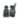

非洲大陆（African regions，非洲各区域）列出了游戏中非洲大陆上全部的区域。下表内容超出了 /Europa Universalis IV/history/provinces/ 文件的范围外，是游戏中1444年11月11日的数据。
注： 欧陆风云4中的大陆、次大陆、区域和地区并不完全与现实中相符。
| 目录 | |||
|---|---|---|---|
| 地图 | 区域 | 地区 | |
| 中非 | 布哈 • 布尼奥罗 • 布津扎 • 乔克维 • 肯尼亚 • 卢巴 • 卢旺达 • 桑库鲁 • 沙巴 • 坦桑尼亚 • 乌干达 • 赞比亚 | ||
| 东非 | 贝茨米萨拉卡 • 斯瓦希里中部海岸 • 朱巴 • 下赞比西 • 马达加斯加高地 • 马夸内 • 马斯卡瑞恩 • 蒙巴萨 • 莫桑比克 • 恩貢德 • 斯瓦希里北部海岸 • 鲁伍马 • 萨卡拉瓦 • 希雷 • 南马达加斯加 • 上赞比西 | ||
| 埃及 | 昔兰尼加 • 下努比亚 • 红海山脉 • 绿洲 • 坦塔 • 巴哈日 • 瓦斯塔尼 赛义德 | ||
| 几内亚 | 佛得角 • 贝宁 • 富塔贾隆 • 几内亚 • 几内亚湾 • 乔洛夫 • 圣多美 • 西非海岸 | ||
| 非洲之角 | 阿居乌壤 • 奥萨 • 中埃塞俄比亚 • 达莫特 • 栋古拉 • 哈迪亚 • 伊法特 • 咖法 • 马吉尔廷 • 摩加迪沙 • 欧加登 • 红海海岸 • 森纳尔 • 绍阿 • 索马里兰 • 提格雷 • 上努比亚 | ||
| 刚果 | 安哥拉 • 开赛 • 刚果 • 刚果海岸 • 下开赛 • 马坦巴 | ||
| 马格里布 | 阿尔及尔 • 摩洛哥中部 • 杰尔巴 • 费赞 • 高地平原 • 卡比利亚 • 摩洛哥北部 • 北撒哈拉 • 乌列奈尔 • 摩洛哥南部 • 苏斯 • 塔菲拉勒特 • 的黎波里塔尼亚 • 巴巴里海岸 • 马卡罗尼西亚 • 突尼斯 | ||
| 尼日尔 | 阿达马瓦高原 • 阿塔科拉韦梅 • 卡诺 • 杰内 • 卡齐纳 • 孔格 • 下尼日尔 • 下沃尔特 • 曼丁 • 马西纳 • 台克鲁尔 • 上沃尔特 • 扎若 | ||
| 萨赫勒 | 巴格纳 • 博尔努 • 中撒哈拉 • 登迪 • 东艾尔高原 • 卡奈姆 • 科尔多凡 • 尼日尔河套 • 西艾尔高原 • 西撒哈拉 | ||
| 南非 | 布图阿 • 好望角 • 纳塔尔 • 克利马内 • 南非高原 • 津巴布韦 | ||
中非
布哈
| ID | 名称 | 所有者（1444） |  | 宗教 | 文化 | 产品 | 贸易节点 | 永久性修正 | ||
|---|---|---|---|---|---|---|---|---|---|---|
| 4070 | 3 | 3 | 3 | 拜物教 | 大湖地区 | |||||
| 4071 | 2 | 2 | 1 | 拜物教 | 大湖地区 | |||||
| 4072 | 2 | 2 | 2 | 拜物教 | 大湖地区 | |||||
| 4076 | 2 | 2 | 2 | 拜物教 | 大湖地区 | |||||
| 4077 | 2 | 2 | 1 | 拜物教 | 大湖地区 |
布尼奥罗
| ID | 名称 | 所有者（1444） | 宗教 | 文化 | 产品 | 贸易节点 | 永久性修正 | |||
|---|---|---|---|---|---|---|---|---|---|---|
| 4065 | 4 | 3 | 3 | 拜物教 | 大湖地区 | |||||
| 4074 | 1 | 1 | 2 | 拜物教 | 大湖地区 | |||||
| 4075 | 1 | 1 | 1 | 拜物教 | 大湖地区 |
布津扎
| ID | 名称 | 所有者（1444） | 宗教 | 文化 | 产品 | 贸易节点 | 永久性修正 | |||
|---|---|---|---|---|---|---|---|---|---|---|
| 4059 | 2 | 2 | 1 | 拜物教 | 大湖地区 | |||||
| 4061 | 卡拉圭 | 2 | 2 | 2 | 拜物教 | 大湖地区 | ||||
| 4063 | 卡拉圭 | 3 | 3 | 2 | 拜物教 | 大湖地区 |
绍奎
| ID | 名称 | 所有者（1444） | 宗教 | 文化 | 产品 | 贸易节点 | 永久性修正 | |||
|---|---|---|---|---|---|---|---|---|---|---|
| 4094 | 1 | 1 | 2 | 拜物教 | 刚果 | |||||
| 4095 | 2 | 2 | 1 | 拜物教 | 刚果 | |||||
| 4107 | 1 | 2 | 2 | 拜物教 | 刚果 |
肯尼亚
| ID | 名称 | 所有者（1444） | 宗教 | 文化 | 产品 | 贸易节点 | 永久性修正 | |||
|---|---|---|---|---|---|---|---|---|---|---|
| 1273 | 1 | 1 | 1 | 拜物教 | 大湖地区 | |||||
| 1925 | 1 | 1 | 1 | 拜物教 | 大湖地区 | |||||
| 4053 | 1 | 1 | 1 | 拜物教 | 大湖地区 | |||||
| 4054 | 2 | 2 | 1 | 拜物教 | 大湖地区 | |||||
| 4060 | 1 | 1 | 1 | 拜物教 | 大湖地区 |
卢巴
| ID | 名称 | 所有者（1444） | 宗教 | 文化 | 产品 | 贸易节点 | 永久性修正 | |||
|---|---|---|---|---|---|---|---|---|---|---|
| 4097 | 3 | 3 | 3 | 拜物教 | 刚果 | 市场 | ||||
| 4099 | 2 | 2 | 3 | 拜物教 | 刚果 | |||||
| 4105 | 2 | 2 | 2 | 拜物教 | 刚果 | |||||
| 4109 | 2 | 2 | 2 | 拜物教 | 刚果 |
卢旺达
| ID | 名称 | 所有者（1444） | 宗教 | 文化 | 产品 | 贸易节点 | 永久性修正 | |||
|---|---|---|---|---|---|---|---|---|---|---|
| 4067 | 4 | 4 | 3 | 拜物教 | 大湖地区 | |||||
| 4068 | 2 | 2 | 3 | 拜物教 | 大湖地区 | |||||
| 4069 | 3 | 3 | 3 | 拜物教 | 大湖地区 |
桑库鲁
| ID | 名称 | 所有者（1444） | 宗教 | 文化 | 产品 | 贸易节点 | 永久性修正 | |||
|---|---|---|---|---|---|---|---|---|---|---|
| 4089 | 2 | 1 | 3 | 拜物教 | 刚果 | 市场 | ||||
| 4090 | 卡隆兑 | 1 | 1 | 1 | 拜物教 | 刚果 | ||||
| 4096 | 卡隆兑 | 2 | 2 | 2 | 拜物教 | 刚果 |
沙巴
| ID | 名称 | 所有者（1444） | 宗教 | 文化 | 产品 | 贸易节点 | 永久性修正 | |||
|---|---|---|---|---|---|---|---|---|---|---|
| 4098 | 2 | 2 | 1 | 拜物教 | 刚果 | |||||
| 4100 | 3 | 2 | 3 | 拜物教 | 刚果 | |||||
| 4101 | 2 | 3 | 2 | 拜物教 | 刚果 | |||||
| 4102 | 1 | 1 | 1 | 拜物教 | 刚果 | |||||
| 4103 | 2 | 2 | 2 | 拜物教 | 刚果 |
坦桑尼亚
| ID | 名称 | 所有者（1444） | 宗教 | 文化 | 产品 | 贸易节点 | 永久性修正 | |||
|---|---|---|---|---|---|---|---|---|---|---|
| 4055 | 1 | 1 | 1 | 拜物教 | 大湖地区 | |||||
| 4056 | 1 | 1 | 1 | 拜物教 | 大湖地区 | |||||
| 4057 | 1 | 1 | 1 | 拜物教 | 大湖地区 | |||||
| 4058 | 1 | 1 | 1 | 拜物教 | 大湖地区 | |||||
| 4073 | 1 | 1 | 1 | 拜物教 | 大湖地区 |
乌干达
| ID | 名称 | 所有者（1444） | 宗教 | 文化 | 产品 | 贸易节点 | 永久性修正 | |||
|---|---|---|---|---|---|---|---|---|---|---|
| 4062 | 3 | 3 | 3 | 拜物教 | 大湖地区 | |||||
| 4064 | 4 | 4 | 4 | 拜物教 | 大湖地区 | 市镇 | ||||
| 4066 | 3 | 3 | 2 | 拜物教 | 大湖地区 |
赞比亚
| ID | 名称 | 所有者（1444） | 宗教 | 文化 | 产品 | 贸易节点 | 永久性修正 | |||
|---|---|---|---|---|---|---|---|---|---|---|
| 4104 | 1 | 1 | 1 | 拜物教 | 赞比西流域 | |||||
| 4106 | 1 | 1 | 1 | 拜物教 | 赞比西流域 | |||||
| 4108 | 1 | 1 | 1 | 拜物教 | 赞比西流域 |
东非
贝茨米萨拉卡
| ID | 名称 | 所有者（1444） | 宗教 | 文化 | 产品 | 贸易节点 | 永久性修正 | |||
|---|---|---|---|---|---|---|---|---|---|---|
| 4021 | 1 | 2 | 1 | 拜物教 | 桑给巴尔 | |||||
| 4024 | 2 | 2 | 1 | 拜物教 | 桑给巴尔 | |||||
| 4025 | 3 | 2 | 2 | 拜物教 | 桑给巴尔 | 天然良港 |
斯瓦希里中部海岸
| ID | 名称 | 所有者（1444） | 宗教 | 文化 | 产品 | 贸易节点 | 永久性修正 | |||
|---|---|---|---|---|---|---|---|---|---|---|
| 1196 | 4 | 4 | 2 | 桑给巴尔 | 天然良港 | |||||
| 1197 | 1 | 1 | 1 | 拜物教 | 桑给巴尔 | |||||
| 1198 | 2 | 2 | 1 | 桑给巴尔 | ||||||
| 1199 | 1 | 1 | 1 | 拜物教 | 桑给巴尔 | |||||
| 1201 | 2 | 2 | 1 | 桑给巴尔 | 中转港 |
朱巴
| ID | 名称 | 所有者（1444） | 宗教 | 文化 | 产品 | 贸易节点 | 永久性修正 | |||
|---|---|---|---|---|---|---|---|---|---|---|
| 2777 | 1 | 1 | 1 | 埃塞俄比亚 | ||||||
| 4051 | 1 | 1 | 1 | 大湖地区 | ||||||
| 4052 | 1 | 1 | 1 | 大湖地区 |
下赞比西
| ID | 名称 | 所有者（1444） | 宗教 | 文化 | 产品 | 贸易节点 | 永久性修正 | |||
|---|---|---|---|---|---|---|---|---|---|---|
| 1187 | 2 | 2 | 2 | 拜物教 | 赞比西流域 | |||||
| 1190 | 2 | 2 | 1 | 拜物教 | 赞比西流域 | |||||
| 1191 | 2 | 2 | 1 | 拜物教 | 赞比西流域 | 市镇 |
马达加斯加高地
| ID | 名称 | 所有者（1444） | 宗教 | 文化 | 产品 | 贸易节点 | 永久性修正 | |||
|---|---|---|---|---|---|---|---|---|---|---|
| 1792 | 3 | 3 | 2 | 拜物教 | 桑给巴尔 | |||||
| 4023 | 1 | 1 | 1 | 拜物教 | 桑给巴尔 | |||||
| 4027 | 2 | 1 | 2 | 拜物教 | 桑给巴尔 |
马夸内
| ID | 名称 | 所有者（1444） | 宗教 | 文化 | 产品 | 贸易节点 | 永久性修正 | |||
|---|---|---|---|---|---|---|---|---|---|---|
| 4034 | 1 | 2 | 1 | 拜物教 | 赞比西流域 | |||||
| 4035 | 1 | 1 | 1 | 拜物教 | 赞比西流域 | |||||
| 4048 | 1 | 1 | 1 | 拜物教 | 赞比西流域 |
马斯卡瑞恩
| ID | 名称 | 所有者（1444） | 宗教 | 文化 | 产品 | 贸易节点 | 永久性修正 | |||
|---|---|---|---|---|---|---|---|---|---|---|
| 1100 | 2 | 2 | 1 | 桑给巴尔 | ||||||
| 1102 | 5 | 5 | 1 | 桑给巴尔 | ||||||
| 1103 | 5 | 5 | 1 | 桑给巴尔 |
蒙巴萨
| ID | 名称 | 所有者（1444） | 宗教 | 文化 | 产品 | 贸易节点 | 永久性修正 | |||
|---|---|---|---|---|---|---|---|---|---|---|
| 1200 | 2 | 2 | 2 | 拜物教 | 桑给巴尔 | |||||
| 1202 | 5 | 5 | 2 | 桑给巴尔 | 中转港 | |||||
| 1203 | 4 | 4 | 2 | 桑给巴尔 | 天然良港 |
莫桑比克
| ID | 名称 | 所有者（1444） | 宗教 | 文化 | 产品 | 贸易节点 | 永久性修正 | |||
|---|---|---|---|---|---|---|---|---|---|---|
| 788 | 3 | 3 | 1 | 桑给巴尔 | ||||||
| 1195 | 2 | 2 | 2 | 桑给巴尔 | ||||||
| 4049 | 2 | 2 | 1 | 桑给巴尔 | Kongo estuary | |||||
| 4020 | 1 | 1 | 1 | 桑给巴尔 |
恩贡德
| ID | 名称 | 所有者（1444） | 宗教 | 文化 | 产品 | 贸易节点 | 永久性修正 | |||
|---|---|---|---|---|---|---|---|---|---|---|
| 4041 | 1 | 1 | 1 | 拜物教 | 赞比西流域 | |||||
| 4044 | 2 | 2 | 1 | 拜物教 | 赞比西流域 | |||||
| 4045 | 2 | 2 | 2 | 拜物教 | 赞比西流域 |
斯瓦希里北部海岸
| ID | 名称 | 所有者（1444） | 宗教 | 文化 | 产品 | 贸易节点 | 永久性修正 | |||
|---|---|---|---|---|---|---|---|---|---|---|
| 1204 | 3 | 3 | 1 | 桑给巴尔 | ||||||
| 2774 | 2 | 2 | 2 | 桑给巴尔 | ||||||
| 2796 | 3 | 3 | 2 | 桑给巴尔 | 天然良港 |
鲁伍马
| ID | 名称 | 所有者（1444） | 宗教 | 文化 | 产品 | 贸易节点 | 永久性修正 | |||
|---|---|---|---|---|---|---|---|---|---|---|
| 4036 | 1 | 1 | 1 | 拜物教 | 赞比西流域 | |||||
| 4037 | 2 | 3 | 2 | 拜物教 | 赞比西流域 | |||||
| 4042 | 1 | 1 | 1 | 拜物教 | 赞比西流域 | |||||
| 4043 | 1 | 1 | 1 | 拜物教 | 赞比西流域 |
萨卡拉瓦
| ID | 名称 | 所有者（1444） | 宗教 | 文化 | 产品 | 贸易节点 | 永久性修正 | |||
|---|---|---|---|---|---|---|---|---|---|---|
| 1193 | 3 | 3 | 3 | 拜物教 | 桑给巴尔 | 天然良港 | ||||
| 1194 | 2 | 2 | 1 | 拜物教 | 桑给巴尔 | |||||
| 4022 | 2 | 2 | 1 | 拜物教 | 桑给巴尔 | |||||
| 4031 | 1 | 2 | 1 | 拜物教 | 桑给巴尔 | |||||
| 4032 | 2 | 1 | 2 | 拜物教 | 桑给巴尔 |
希雷
| ID | 名称 | 所有者（1444） | 宗教 | 文化 | 产品 | 贸易节点 | 永久性修正 | |||
|---|---|---|---|---|---|---|---|---|---|---|
| 4038 | 1 | 1 | 1 | 拜物教 | 赞比西流域 | |||||
| 4039 | 3 | 2 | 4 | 拜物教 | 赞比西流域 | |||||
| 4040 | 3 | 3 | 4 | 拜物教 | 赞比西流域 | 市镇 |
南马达加斯加
| ID | 名称 | 所有者（1444） | 宗教 | 文化 | 产品 | 贸易节点 | 永久性修正 | |||
|---|---|---|---|---|---|---|---|---|---|---|
| 4026 | 2 | 2 | 2 | 桑给巴尔 | ||||||
| 4028 | 2 | 2 | 2 | 拜物教 | 桑给巴尔 | |||||
| 4029 | 2 | 2 | 1 | 桑给巴尔 | ||||||
| 4030 | 1 | 1 | 1 | 拜物教 | 桑给巴尔 |
上赞比西
| ID | 名称 | 所有者（1444） | 宗教 | 文化 | 产品 | 贸易节点 | 永久性修正 | |||
|---|---|---|---|---|---|---|---|---|---|---|
| 4046 | 1 | 1 | 1 | 拜物教 | 赞比西流域 | |||||
| 4047 | 1 | 2 | 1 | 拜物教 | 赞比西流域 | |||||
| 4050 | 1 | 1 | 1 | 拜物教 | 赞比西流域 |
埃及
昔兰尼加
| ID | 名称 | 所有者（1444） | 宗教 | 文化 | 产品 | 贸易节点 | 永久性修正 | |||
|---|---|---|---|---|---|---|---|---|---|---|
| 356 | 2 | 2 | 2 | 亚历山大港 | 天然良港 | |||||
| 357 | 1 | 1 | 1 | 亚历山大港 | ||||||
| 2325 | 1 | 1 | 1 | 亚历山大港 | ||||||
| 2326 | 1 | 1 | 1 | 亚历山大港 |
下努比亚
| ID | 名称 | 所有者（1444） | 宗教 | 文化 | 产品 | 贸易节点 | 永久性修正 | |||
|---|---|---|---|---|---|---|---|---|---|---|
| 1234 | 2 | 2 | 2 | 亚历山大港 | ||||||
| 2322 | 1 | 1 | 1 | 亚历山大港 | ||||||
| 2323 | 1 | 1 | 1 | 亚历山大港 |
红海山脉
| ID | 名称 | 所有者（1444） | 宗教 | 文化 | 产品 | 贸易节点 | 永久性修正 | |||
|---|---|---|---|---|---|---|---|---|---|---|
| 365 | 1 | 1 | 1 | 亚历山大港 | ||||||
| 2315 | 2 | 2 | 1 | 亚历山大港 | ||||||
| 2320 | 1 | 1 | 1 | 亚历山大港 | ||||||
| 2321 | 1 | 1 | 1 | 亚历山大港 |
绿洲
| ID | 名称 | 所有者（1444） | 宗教 | 文化 | 产品 | 贸易节点 | 永久性修正 | |||
|---|---|---|---|---|---|---|---|---|---|---|
| 1233 | 1 | 1 | 1 | 亚历山大港 | ||||||
| 2318 | 1 | 1 | 2 | 亚历山大港 | ||||||
| 4323 | 1 | 1 | 1 | 亚历山大港 |
坦塔
| ID | 名称 | 所有者（1444） | 宗教 | 文化 | 产品 | 贸易节点 | 永久性修正 | |||
|---|---|---|---|---|---|---|---|---|---|---|
| 358 | 5 | 5 | 3 | 亚历山大港 | 天然良港 | |||||
| 362 | 4 | 4 | 2 | 亚历山大港 | 尼罗河河口，天然良港，地中海粮仓 | |||||
| 363 | 4 | 4 | 2 | 亚历山大港 | 尼罗河河口，地中海粮仓 |
巴哈日
| ID | 名称 | 所有者（1444） | 宗教 | 文化 | 产品 | 贸易节点 | 永久性修正 | |||
|---|---|---|---|---|---|---|---|---|---|---|
| 361 | 9 | 9 | 6 | 亚历山大港 | 市镇 | |||||
| 2316 | 4 | 4 | 4 | 亚历山大港 | 地中海粮仓 | |||||
| 4316 | 5 | 5 | 3 | 亚历山大港 | 地中海粮仓 | |||||
| 4317 | 2 | 2 | 2 | 亚历山大港 |
瓦斯塔尼
| ID | 名称 | 所有者（1444） | 宗教 | 文化 | 产品 | 贸易节点 | 永久性修正 | |||
|---|---|---|---|---|---|---|---|---|---|---|
| 359 | 5 | 5 | 2 | 亚历山大港 | ||||||
| 2317 | 3 | 3 | 2 | 亚历山大港 | ||||||
| 4318 | 3 | 3 | 1 | 亚历山大港 |
赛义德
| ID | 名称 | 所有者（1444） | 宗教 | 文化 | 产品 | 贸易节点 | 永久性修正 | |||
|---|---|---|---|---|---|---|---|---|---|---|
| 360 | 1 | 1 | 1 | 亚历山大港 | ||||||
| 1231 | 2 | 2 | 1 | 亚历山大港 | ||||||
| 2319 | 2 | 2 | 1 | 亚历山大港 | ||||||
| 4319 | 2 | 2 | 1 | 亚历山大港 | ||||||
| 4320 | 3 | 3 | 3 | 亚历山大港 |
几内亚
佛得角
| ID | 名称 | 所有者（1444） | 宗教 | 文化 | 产品 | 贸易节点 | 永久性修正 | |||
|---|---|---|---|---|---|---|---|---|---|---|
| 1096 | 1 | 1 | 1 | 象牙海岸 | ||||||
| 1111 | 1 | 1 | 1 | 象牙海岸 |
贝宁
| ID | 名称 | 所有者（1444） | 宗教 | 文化 | 产品 | 贸易节点 | 永久性修正 | |||
|---|---|---|---|---|---|---|---|---|---|---|
| 1147 | 4 | 4 | 3 | 拜物教 | 象牙海岸 | 尼日尔河河口，天然良港 | ||||
| 2289 | 2 | 2 | 1 | 拜物教 | 象牙海岸 | |||||
| 2290 | 2 | 2 | 1 | 拜物教 | 象牙海岸 | |||||
| 2294 | 1 | 1 | 1 | 拜物教 | 象牙海岸 |
富塔贾隆
| ID | 名称 | 所有者（1444） | 宗教 | 文化 | 产品 | 贸易节点 | 永久性修正 | |||
|---|---|---|---|---|---|---|---|---|---|---|
| 1114 | 3 | 3 | 2 | 拜物教 | 象牙海岸 | 天然良港 | ||||
| 1117 | 3 | 3 | 3 | 拜物教 | 象牙海岸 | |||||
| 2238 | 1 | 1 | 1 | 拜物教 | 象牙海岸 |
几内亚
| ID | 名称 | 所有者（1444） | 宗教 | 文化 | 产品 | 贸易节点 | 永久性修正 | |||
|---|---|---|---|---|---|---|---|---|---|---|
| 1118 | 1 | 1 | 1 | 拜物教 | 象牙海岸 | |||||
| 1119 | 1 | 1 | 1 | 拜物教 | 象牙海岸 | |||||
| 2241 | 1 | 1 | 1 | 拜物教 | 象牙海岸 | |||||
| 2242 | 1 | 1 | 1 | 拜物教 | 象牙海岸 |
几内亚湾
| ID | 名称 | 所有者（1444） | 宗教 | 文化 | 产品 | 贸易节点 | 永久性修正 | |||
|---|---|---|---|---|---|---|---|---|---|---|
| 1151 | 1 | 1 | 2 | 拜物教 | 象牙海岸 | |||||
| 1163 | 1 | 1 | 1 | 拜物教 | 象牙海岸 | 天然良港 | ||||
| 1164 | 1 | 1 | 1 | 拜物教 | 象牙海岸 | |||||
| 1165 | 2 | 2 | 1 | 拜物教 | 象牙海岸 |
乔洛夫
| ID | 名称 | 所有者（1444） | 宗教 | 文化 | 产品 | 贸易节点 | 永久性修正 | |||
|---|---|---|---|---|---|---|---|---|---|---|
| 1112 | 1 | 1 | 1 | 象牙海岸 | ||||||
| 1113 | 3 | 3 | 2 | 拜物教 | 象牙海岸 | 塞内加尔河河口 | ||||
| 1116 | 3 | 3 | 2 | 拜物教 | 象牙海岸 | |||||
| 2239 | 2 | 2 | 1 | 拜物教 | 象牙海岸 |
圣多美
| ID | 名称 | 所有者（1444） | 宗教 | 文化 | 产品 | 贸易节点 | 永久性修正 | |||
|---|---|---|---|---|---|---|---|---|---|---|
| 1097 | 2 | 2 | 1 | 拜物教 | 象牙海岸 | |||||
| 1306 | 1 | 1 | 1 | 拜物教 | 象牙海岸 |
西非海岸
| ID | 名称 | 所有者（1444） | 宗教 | 文化 | 产品 | 贸易节点 | 永久性修正 | |||
|---|---|---|---|---|---|---|---|---|---|---|
| 1126 | 1 | 1 | 1 | 拜物教 | 象牙海岸 | |||||
| 1139 | 2 | 2 | 1 | 拜物教 | 象牙海岸 | 天然良港 | ||||
| 1141 | 1 | 1 | 1 | 拜物教 | 象牙海岸 | |||||
| 2257 | 2 | 2 | 1 | 拜物教 | 象牙海岸 | |||||
| 2258 | 2 | 2 | 1 | 拜物教 | 象牙海岸 | 天然良港 |
非洲之角
阿朱兰
| ID | 名称 | 所有者（1444） | 宗教 | 文化 | 产品 | 贸易节点 | 永久性修正 | |||
|---|---|---|---|---|---|---|---|---|---|---|
| 2776 | 1 | 1 | 1 | 埃塞俄比亚 | ||||||
| 2780 | 1 | 1 | 1 | 埃塞俄比亚 | ||||||
| 2781 | 1 | 1 | 1 | 埃塞俄比亚 | ||||||
| 2785 | 1 | 1 | 1 | 埃塞俄比亚 |
奥萨
| ID | 名称 | 所有者（1444） | 宗教 | 文化 | 产品 | 贸易节点 | 永久性修正 | |||
|---|---|---|---|---|---|---|---|---|---|---|
| 1215 | 2 | 2 | 2 | 亚丁湾 | ||||||
| 2764 | 2 | 1 | 2 | 亚丁湾 | ||||||
| 2765 | 1 | 1 | 1 | 亚丁湾 | ||||||
| 2768 | 1 | 1 | 1 | 亚丁湾 |
中埃塞俄比亚
| ID | 名称 | 所有者（1444） | 宗教 | 文化 | 产品 | 贸易节点 | 永久性修正 | |||
|---|---|---|---|---|---|---|---|---|---|---|
| 1214 | 2 | 2 | 2 | 埃塞俄比亚 | ||||||
| 1223 | 2 | 2 | 2 | 埃塞俄比亚 | ||||||
| 1224 | 4 | 4 | 2 | 埃塞俄比亚 | 市镇 | |||||
| 2769 | 2 | 2 | 2 | 埃塞俄比亚 | ||||||
| 2772 | 2 | 2 | 2 | 埃塞俄比亚 |
达莫特
| ID | 名称 | 所有者（1444） | 宗教 | 文化 | 产品 | 贸易节点 | 永久性修正 | |||
|---|---|---|---|---|---|---|---|---|---|---|
| 2762 | 2 | 3 | 2 | 埃塞俄比亚 | ||||||
| 2763 | 2 | 2 | 2 | 埃塞俄比亚 | ||||||
| 2770 | 2 | 2 | 1 | 埃塞俄比亚 |
栋古拉
| ID | 名称 | 所有者（1444） | 宗教 | 文化 | 产品 | 贸易节点 | 永久性修正 | |||
|---|---|---|---|---|---|---|---|---|---|---|
| 1220 | 1 | 1 | 2 | 埃塞俄比亚 | ||||||
| 1228 | 2 | 1 | 2 | 埃塞俄比亚 | ||||||
| 1229 | 1 | 1 | 2 | 埃塞俄比亚 |
哈迪亚
| ID | 名称 | 所有者（1444） | 宗教 | 文化 | 产品 | 贸易节点 | 永久性修正 | |||
|---|---|---|---|---|---|---|---|---|---|---|
| 1218 | 2 | 2 | 2 | 拜物教 | 埃塞俄比亚 | |||||
| 2756 | 2 | 2 | 2 | 拜物教 | 埃塞俄比亚 | |||||
| 2760 | 3 | 3 | 2 | 埃塞俄比亚 |
伊法特
| ID | 名称 | 所有者（1444） | 宗教 | 文化 | 产品 | 贸易节点 | 永久性修正 | |||
|---|---|---|---|---|---|---|---|---|---|---|
| 1211 | 6 | 6 | 4 | 亚丁湾 | 市场 | |||||
| 1212 | 5 | 5 | 3 | 亚丁湾 | 中转港 | |||||
| 2773 | 1 | 1 | 1 | 亚丁湾 | ||||||
| 2793 | 2 | 2 | 2 | 亚丁湾 |
咖法
| ID | 名称 | 所有者（1444） | 宗教 | 文化 | 产品 | 贸易节点 | 永久性修正 | |||
|---|---|---|---|---|---|---|---|---|---|---|
| 2757 | 4 | 3 | 4 | 埃塞俄比亚 | ||||||
| 2758 | 伊那瑞亚 | 2 | 3 | 2 | 埃塞俄比亚 | |||||
| 2759 | 1 | 1 | 1 | 拜物教 | 埃塞俄比亚 | |||||
| 4158 | 1 | 2 | 1 | 拜物教 | 埃塞俄比亚 |
马吉尔廷
| ID | 名称 | 所有者（1444） | 宗教 | 文化 | 产品 | 贸易节点 | 永久性修正 | |||
|---|---|---|---|---|---|---|---|---|---|---|
| 1206 | 1 | 1 | 1 | 亚丁湾 | ||||||
| 2024 | 1 | 1 | 1 | 亚丁湾 | ||||||
| 2783 | 1 | 1 | 1 | 亚丁湾 | 天然良港 | |||||
| 2784 | 1 | 1 | 1 | 亚丁湾 | ||||||
| 2788 | 2 | 2 | 1 | 亚丁湾 |
摩加迪沙
| ID | 名称 | 所有者（1444） | 宗教 | 文化 | 产品 | 贸易节点 | 永久性修正 | |||
|---|---|---|---|---|---|---|---|---|---|---|
| 1205 | 4 | 4 | 2 | 亚丁湾 | 中转港 | |||||
| 2775 | 2 | 2 | 1 | 亚丁湾 | ||||||
| 2782 | 2 | 2 | 1 | 亚丁湾 | ||||||
| 2794 | 2 | 2 | 1 | 亚丁湾 | ||||||
| 2795 | 2 | 2 | 1 | 亚丁湾 |
欧加登
| ID | 名称 | 所有者（1444） | 宗教 | 文化 | 产品 | 贸易节点 | 永久性修正 | |||
|---|---|---|---|---|---|---|---|---|---|---|
| 1207 | 欧加登 | 1 | 1 | 1 | 埃塞俄比亚 | |||||
| 1208 | 1 | 1 | 1 | 埃塞俄比亚 | ||||||
| 1210 | 1 | 1 | 1 | 埃塞俄比亚 | ||||||
| 2778 | 1 | 1 | 1 | 埃塞俄比亚 | ||||||
| 2779 | 欧加登 | 1 | 1 | 1 | 埃塞俄比亚 |
红海海岸
| ID | 名称 | 所有者（1444） | 宗教 | 文化 | 产品 | 贸易节点 | 永久性修正 | |||
|---|---|---|---|---|---|---|---|---|---|---|
| 1230 | 2 | 2 | 1 | 亚丁湾 | ||||||
| 1232 | 1 | 1 | 1 | 亚丁湾 | ||||||
| 2324 | 1 | 1 | 1 | 亚丁湾 | ||||||
| 2787 | 2 | 2 | 2 | 亚丁湾 |
森纳尔
| ID | 名称 | 所有者（1444） | 宗教 | 文化 | 产品 | 贸易节点 | 永久性修正 | |||
|---|---|---|---|---|---|---|---|---|---|---|
| 1217 | 1 | 1 | 2 | 拜物教 | 埃塞俄比亚 | |||||
| 2799 | 1 | 1 | 2 | 埃塞俄比亚 | ||||||
| 4033 | 1 | 1 | 1 | 埃塞俄比亚 |
绍阿
| ID | 名称 | 所有者（1444） | 宗教 | 文化 | 产品 | 贸易节点 | 永久性修正 | |||
|---|---|---|---|---|---|---|---|---|---|---|
| 1213 | 3 | 3 | 3 | 埃塞俄比亚 | ||||||
| 2761 | 1 | 1 | 2 | 埃塞俄比亚 | ||||||
| 2791 | 1 | 1 | 1 | 埃塞俄比亚 |
索马里兰
| ID | 名称 | 所有者（1444） | 宗教 | 文化 | 产品 | 贸易节点 | 永久性修正 | |||
|---|---|---|---|---|---|---|---|---|---|---|
| 1209 | 瓦尔桑盖利 | 4 | 4 | 2 | 亚丁湾 | |||||
| 2786 | 瓦尔桑盖利 | 3 | 3 | 2 | 亚丁湾 | |||||
| 2789 | 瓦尔桑盖利 | 2 | 2 | 1 | 亚丁湾 | |||||
| 2790 | 瓦尔桑盖利 | 1 | 1 | 2 | 亚丁湾 | |||||
| 2792 | 瓦尔桑盖利 | 1 | 1 | 1 | 亚丁湾 |
提格雷
| ID | 名称 | 所有者（1444） | 宗教 | 文化 | 产品 | 贸易节点 | 永久性修正 | |||
|---|---|---|---|---|---|---|---|---|---|---|
| 1227 | 2 | 2 | 3 | 埃塞俄比亚 | ||||||
| 2766 | 2 | 2 | 2 | 埃塞俄比亚 | ||||||
| 2767 | 1 | 1 | 2 | 埃塞俄比亚 | ||||||
| 2771 | 1 | 1 | 2 | 埃塞俄比亚 |
上努比亚
| ID | 名称 | 所有者（1444） | 宗教 | 文化 | 产品 | 贸易节点 | 永久性修正 | |||
|---|---|---|---|---|---|---|---|---|---|---|
| 1222 | 1 | 1 | 2 | 埃塞俄比亚 | ||||||
| 1225 | 1 | 1 | 1 | 埃塞俄比亚 | ||||||
| 1226 | 1 | 1 | 2 | 埃塞俄比亚 | ||||||
| 2797 | 1 | 1 | 2 | 埃塞俄比亚 | ||||||
| 2798 | 3 | 2 | 2 | 埃塞俄比亚 | 市镇 |
刚果
安哥拉
| ID | 名称 | 所有者（1444） | 宗教 | 文化 | 产品 | 贸易节点 | 永久性修正 | |||
|---|---|---|---|---|---|---|---|---|---|---|
| 1098 | 1 | 1 | 1 | 象牙海岸 | ||||||
| 1167 | 2 | 2 | 1 | 拜物教 | 象牙海岸 | |||||
| 1171 | 2 | 2 | 3 | 拜物教 | 象牙海岸 | 市场 | ||||
| 1172 | 4 | 4 | 2 | 拜物教 | 象牙海岸 | 天然良港 | ||||
| 1174 | 1 | 1 | 1 | 拜物教 | 象牙海岸 |
开赛
| ID | 名称 | 所有者（1444） | 宗教 | 文化 | 产品 | 贸易节点 | 永久性修正 | |||
|---|---|---|---|---|---|---|---|---|---|---|
| 4083 | 2 | 2 | 3 | 拜物教 | 刚果 | |||||
| 4087 | 1 | 2 | 2 | 拜物教 | 刚果 | |||||
| 4091 | 2 | 2 | 2 | 拜物教 | 刚果 | |||||
| 4092 | 3 | 3 | 3 | 拜物教 | 刚果 | 市场 | ||||
| 4093 | 2 | 2 | 1 | 拜物教 | 刚果 |
刚果
| ID | 名称 | 所有者（1444） | 宗教 | 文化 | 产品 | 贸易节点 | 永久性修正 | |||
|---|---|---|---|---|---|---|---|---|---|---|
| 798 | 2 | 2 | 1 | 拜物教 | 刚果 | |||||
| 1169 | 2 | 2 | 2 | 拜物教 | 刚果 | |||||
| 1170 | 4 | 4 | 2 | 拜物教 | 刚果 | 市镇 | ||||
| 1901 | 2 | 2 | 2 | 拜物教 | 刚果 | |||||
| 2949 | 2 | 2 | 1 | 拜物教 | 刚果 |
刚果海岸
| ID | 名称 | 所有者（1444） | 宗教 | 文化 | 产品 | 贸易节点 | 永久性修正 | |||
|---|---|---|---|---|---|---|---|---|---|---|
| 1166 | 3 | 3 | 3 | 拜物教 | 象牙海岸 | |||||
| 1168 | 2 | 2 | 1 | 拜物教 | 象牙海岸 | |||||
| 4078 | 2 | 1 | 2 | 拜物教 | 象牙海岸 | |||||
| 4079 | 3 | 2 | 2 | 拜物教 | 象牙海岸 | |||||
| 4080 | 4 | 3 | 4 | 拜物教 | 象牙海岸 |
下开赛
| ID | 名称 | 所有者（1444） | 宗教 | 文化 | 产品 | 贸易节点 | 永久性修正 | |||
|---|---|---|---|---|---|---|---|---|---|---|
| 4081 | 1 | 1 | 1 | 拜物教 | 刚果 | |||||
| 4085 | 3 | 2 | 3 | 拜物教 | 刚果 | |||||
| 4086 | 1 | 1 | 2 | 拜物教 | 刚果 | |||||
| 4088 | 2 | 2 | 2 | 拜物教 | 刚果 |
马坦巴
| ID | 名称 | 所有者（1444） | 宗教 | 文化 | 产品 | 贸易节点 | 永久性修正 | |||
|---|---|---|---|---|---|---|---|---|---|---|
| 2948 | 2 | 2 | 2 | 拜物教 | 刚果 | |||||
| 4082 | 2 | 2 | 2 | 拜物教 | 刚果 | |||||
| 4084 | 1 | 1 | 1 | 拜物教 | 刚果 |
马格里布
阿尔及尔
| ID | 名称 | 所有者（1444） | 宗教 | 文化 | 产品 | 贸易节点 | 永久性修正 | |||
|---|---|---|---|---|---|---|---|---|---|---|
| 336 | 5 | 5 | 3 | 萨菲 | 市镇 | |||||
| 2465 | 3 | 3 | 1 | 萨菲 | ||||||
| 4562 | 3 | 2 | 2 | 萨菲 |
摩洛哥中部
| ID | 名称 | 所有者（1444） | 宗教 | 文化 | 产品 | 贸易节点 | 永久性修正 | |||
|---|---|---|---|---|---|---|---|---|---|---|
| 343 | 5 | 5 | 3 | 萨菲 | ||||||
| 344 | 5 | 5 | 2 | 萨菲 | ||||||
| 2467 | 4 | 4 | 2 | 萨菲 | ||||||
| 2468 | 3 | 3 | 1 | 萨菲 |
杰尔巴
| ID | 名称 | 所有者（1444） | 宗教 | 文化 | 产品 | 贸易节点 | 永久性修正 | |||
|---|---|---|---|---|---|---|---|---|---|---|
| 353 | 1 | 1 | 1 | 突尼斯 | ||||||
| 2453 | 3 | 3 | 1 | 突尼斯 | ||||||
| 2954 | 1 | 1 | 1 | 突尼斯 | 天然良港 |
费赞
| ID | 名称 | 所有者（1444） | 宗教 | 文化 | 产品 | 贸易节点 | 永久性修正 | |||
|---|---|---|---|---|---|---|---|---|---|---|
| 2448 | 1 | 1 | 1 | 突尼斯 | ||||||
| 2449 | 1 | 1 | 1 | 突尼斯 | ||||||
| 2474 | 1 | 1 | 1 | 突尼斯 | ||||||
| 4567 | 1 | 1 | 1 | 突尼斯 |
阿尔卜
| ID | 名称 | 所有者（1444） | 宗教 | 文化 | 产品 | 贸易节点 | 永久性修正 | |||
|---|---|---|---|---|---|---|---|---|---|---|
| 342 | 4 | 4 | 2 | 萨菲 | 天然良港 | |||||
| 345 | 1 | 1 | 1 | 萨菲 | ||||||
| 2469 | 2 | 2 | 1 | 萨菲 | ||||||
| 4564 | 3 | 2 | 1 | 萨菲 |
高地平原
| ID | 名称 | 所有者（1444） | 宗教 | 文化 | 产品 | 贸易节点 | 永久性修正 | |||
|---|---|---|---|---|---|---|---|---|---|---|
| 2459 | 1 | 1 | 1 | 萨菲 | ||||||
| 2462 | 2 | 2 | 1 | 萨菲 | ||||||
| 2463 | 1 | 1 | 1 | 萨菲 |
卡比利亚
| ID | 名称 | 所有者（1444） | 宗教 | 文化 | 产品 | 贸易节点 | 永久性修正 | |||
|---|---|---|---|---|---|---|---|---|---|---|
| 339 | 3 | 3 | 2 | 突尼斯 | ||||||
| 340 | 3 | 3 | 2 | 突尼斯 | ||||||
| 1882 | 2 | 2 | 1 | 突尼斯 |
摩洛哥北部
| ID | 名称 | 所有者（1444） | 宗教 | 文化 | 产品 | 贸易节点 | 永久性修正 | |||
|---|---|---|---|---|---|---|---|---|---|---|
| 334 | 3 | 3 | 1 | 塞维利亚 | 中转港 | |||||
| 335 | 3 | 3 | 1 | 塞维利亚 | ||||||
| 1751 | 3 | 3 | 1 | 塞维利亚 | ||||||
| 4563 | 4 | 3 | 2 | 塞维利亚 | ||||||
| 4561 | 4 | 2 | 2 | 塞维利亚 |
北撒哈拉
| ID | 名称 | 所有者（1444） | 宗教 | 文化 | 产品 | 贸易节点 | 永久性修正 | |||
|---|---|---|---|---|---|---|---|---|---|---|
| 352 | 2 | 2 | 1 | 突尼斯 | ||||||
| 2450 | 1 | 1 | 1 | 突尼斯 | ||||||
| 2456 | 1 | 1 | 1 | 突尼斯 | ||||||
| 2457 | 姆扎卜 | 1 | 1 | 1 | 突尼斯 | |||||
| 2472 | 1 | 1 | 1 | 突尼斯 |
乌列奈尔
| ID | 名称 | 所有者（1444） | 宗教 | 文化 | 产品 | 贸易节点 | 永久性修正 | |||
|---|---|---|---|---|---|---|---|---|---|---|
| 350 | 姆扎卜 | 1 | 1 | 1 | 突尼斯 | |||||
| 351 | 1 | 1 | 1 | 突尼斯 | ||||||
| 2458 | 1 | 1 | 1 | 突尼斯 |
摩洛哥南部
| ID | 名称 | 所有者（1444） | 宗教 | 文化 | 产品 | 贸易节点 | 永久性修正 | |||
|---|---|---|---|---|---|---|---|---|---|---|
| 347 | 1 | 1 | 1 | 萨菲 | ||||||
| 1110 | 3 | 3 | 2 | 萨菲 | 天然良港 | |||||
| 2470 | 2 | 2 | 1 | 萨菲 |
苏斯
| ID | 名称 | 所有者（1444） | 宗教 | 文化 | 产品 | 贸易节点 | 永久性修正 | |||
|---|---|---|---|---|---|---|---|---|---|---|
| 348 | 5 | 5 | 2 | 萨菲 | ||||||
| 2464 | 2 | 2 | 1 | 萨菲 | ||||||
| 2466 | 4 | 4 | 2 | 萨菲 | 市场 | |||||
| 4568 | 2 | 2 | 1 | 萨菲 |
塔菲拉勒特
| ID | 名称 | 所有者（1444） | 宗教 | 文化 | 产品 | 贸易节点 | 永久性修正 | |||
|---|---|---|---|---|---|---|---|---|---|---|
| 346 | 4 | 4 | 2 | 萨菲 | 市镇 | |||||
| 349 | 2 | 2 | 1 | 萨菲 | ||||||
| 2460 | 1 | 1 | 1 | 萨菲 |
的黎波里塔尼亚
| ID | 名称 | 所有者（1444） | 宗教 | 文化 | 产品 | 贸易节点 | 永久性修正 | |||
|---|---|---|---|---|---|---|---|---|---|---|
| 354 | 2 | 2 | 1 | 突尼斯 | 中转港 | |||||
| 355 | 1 | 1 | 1 | 突尼斯 | ||||||
| 2451 | 1 | 1 | 1 | 突尼斯 | ||||||
| 2452 | 1 | 1 | 1 | 突尼斯 |
突尼斯
| ID | 名称 | 所有者（1444） | 宗教 | 文化 | 产品 | 贸易节点 | 永久性修正 | |||
|---|---|---|---|---|---|---|---|---|---|---|
| 341 | 6 | 6 | 2 | 突尼斯 | 中转港 | |||||
| 2454 | 2 | 2 | 1 | 突尼斯 | ||||||
| 2455 | 4 | 4 | 1 | 突尼斯 | ||||||
| 2473 | 5 | 5 | 2 | 突尼斯 | ||||||
| 4566 | 4 | 5 | 1 | 突尼斯 |
巴巴里海岸
| ID | 名称 | 所有者（1444） | 宗教 | 文化 | 产品 | 贸易节点 | 永久性修正 | |||
|---|---|---|---|---|---|---|---|---|---|---|
| 337 | 3 | 3 | 1 | 萨菲 | ||||||
| 338 | 5 | 5 | 3 | 萨菲 | 天然良港 | |||||
| 2461 | 3 | 3 | 2 | 萨菲 |
尼日尔
阿达马瓦高原
| ID | 名称 | 所有者（1444） | 宗教 | 文化 | 产品 | 贸易节点 | 永久性修正 | |||
|---|---|---|---|---|---|---|---|---|---|---|
| 1161 | 1 | 1 | 1 | 拜物教 | 卡齐纳 | |||||
| 1162 | 1 | 1 | 1 | 拜物教 | 卡齐纳 | |||||
| 1249 | 1 | 1 | 1 | 拜物教 | 卡齐纳 | |||||
| 2285 | 1 | 1 | 1 | 拜物教 | 卡齐纳 |
阿塔科拉韦梅
| ID | 名称 | 所有者（1444） | 宗教 | 文化 | 产品 | 贸易节点 | 永久性修正 | |||
|---|---|---|---|---|---|---|---|---|---|---|
| 1140 | 1 | 1 | 1 | 拜物教 | 廷巴克图 | |||||
| 1143 | 1 | 1 | 1 | 拜物教 | 廷巴克图 | |||||
| 2291 | 2 | 2 | 1 | 拜物教 | 廷巴克图 | |||||
| 2292 | 1 | 1 | 1 | 拜物教 | 廷巴克图 | |||||
| 2295 | 1 | 1 | 1 | 拜物教 | 廷巴克图 |
卡诺
| ID | 名称 | 所有者（1444） | 宗教 | 文化 | 产品 | 贸易节点 | 永久性修正 | |||
|---|---|---|---|---|---|---|---|---|---|---|
| 1155 | 5 | 5 | 5 | 卡齐纳 | ||||||
| 2280 | 2 | 2 | 1 | 卡齐纳 | ||||||
| 2281 | 2 | 2 | 1 | 卡齐纳 |
杰内
| ID | 名称 | 所有者（1444） | 宗教 | 文化 | 产品 | 贸易节点 | 永久性修正 | |||
|---|---|---|---|---|---|---|---|---|---|---|
| 1134 | 7 | 7 | 3 | 拜物教 | 廷巴克图 | 市镇 | ||||
| 2259 | 3 | 3 | 1 | 拜物教 | 廷巴克图 | |||||
| 2261 | 4 | 4 | 1 | 拜物教 | 廷巴克图 | |||||
| 2263 | 1 | 1 | 1 | 拜物教 | 廷巴克图 |
卡齐纳
| ID | 名称 | 所有者（1444） | 宗教 | 文化 | 产品 | 贸易节点 | 永久性修正 | |||
|---|---|---|---|---|---|---|---|---|---|---|
| 1148 | 卡齐纳 | 3 | 3 | 3 | 卡齐纳 | |||||
| 1149 | 卡齐纳 | 6 | 6 | 3 | 卡齐纳 | 市镇 | ||||
| 2279 | 卡齐纳 | 3 | 3 | 1 | 卡齐纳 |
孔格
| ID | 名称 | 所有者（1444） | 宗教 | 文化 | 产品 | 贸易节点 | 永久性修正 | |||
|---|---|---|---|---|---|---|---|---|---|---|
| 1122 | 1 | 1 | 1 | 拜物教 | 廷巴克图 | |||||
| 1125 | 2 | 2 | 2 | 拜物教 | 廷巴克图 | |||||
| 2252 | 2 | 2 | 1 | 拜物教 | 廷巴克图 | |||||
| 2253 | 1 | 1 | 1 | 拜物教 | 廷巴克图 |
下尼日尔
| ID | 名称 | 所有者（1444） | 宗教 | 文化 | 产品 | 贸易节点 | 永久性修正 | |||
|---|---|---|---|---|---|---|---|---|---|---|
| 1144 | 3 | 3 | 1 | 拜物教 | 卡齐纳 | |||||
| 1145 | 2 | 2 | 2 | 拜物教 | 卡齐纳 | |||||
| 1146 | 1 | 1 | 1 | 拜物教 | 卡齐纳 | |||||
| 1152 | 1 | 1 | 1 | 拜物教 | 卡齐纳 | |||||
| 1153 | 1 | 1 | 1 | 拜物教 | 卡齐纳 |
下沃尔特
| ID | 名称 | 所有者（1444） | 宗教 | 文化 | 产品 | 贸易节点 | 永久性修正 | |||
|---|---|---|---|---|---|---|---|---|---|---|
| 1138 | 4 | 4 | 1 | 拜物教 | 廷巴克图 | |||||
| 2254 | 3 | 3 | 1 | 拜物教 | 廷巴克图 | |||||
| 2255 | 2 | 2 | 1 | 拜物教 | 廷巴克图 | |||||
| 2256 | 1 | 1 | 1 | 拜物教 | 廷巴克图 | |||||
| 2267 | 3 | 3 | 1 | 拜物教 | 廷巴克图 |
曼丁
| ID | 名称 | 所有者（1444） | 宗教 | 文化 | 产品 | 贸易节点 | 永久性修正 | |||
|---|---|---|---|---|---|---|---|---|---|---|
| 1120 | 6 | 6 | 2 | 拜物教 | 廷巴克图 | |||||
| 1121 | 6 | 6 | 2 | 拜物教 | 廷巴克图 | |||||
| 1124 | 4 | 4 | 8 | 廷巴克图 | 市场 | |||||
| 2248 | 4 | 4 | 1 | 拜物教 | 廷巴克图 |
马西纳
| ID | 名称 | 所有者（1444） | 宗教 | 文化 | 产品 | 贸易节点 | 永久性修正 | |||
|---|---|---|---|---|---|---|---|---|---|---|
| 1123 | 5 | 5 | 2 | 拜物教 | 廷巴克图 | |||||
| 1131 | 4 | 4 | 1 | 拜物教 | 廷巴克图 | 市场 | ||||
| 2249 | 2 | 2 | 1 | 拜物教 | 廷巴克图 | |||||
| 2250 | 3 | 3 | 1 | 拜物教 | 廷巴克图 |
台克鲁尔
| ID | 名称 | 所有者（1444） | 宗教 | 文化 | 产品 | 贸易节点 | 永久性修正 | |||
|---|---|---|---|---|---|---|---|---|---|---|
| 1115 | 1 | 1 | 1 | 拜物教 | 廷巴克图 | |||||
| 2237 | 3 | 3 | 1 | 拜物教 | 廷巴克图 | |||||
| 2240 | 3 | 3 | 1 | 拜物教 | 廷巴克图 | |||||
| 2244 | 1 | 1 | 1 | 拜物教 | 廷巴克图 |
上沃尔特
| ID | 名称 | 所有者（1444） | 宗教 | 文化 | 产品 | 贸易节点 | 永久性修正 | |||
|---|---|---|---|---|---|---|---|---|---|---|
| 1135 | 3 | 3 | 2 | 拜物教 | 廷巴克图 | |||||
| 1136 | 1 | 1 | 1 | 拜物教 | 廷巴克图 | |||||
| 1137 | 3 | 3 | 3 | 拜物教 | 廷巴克图 | |||||
| 2265 | 1 | 1 | 1 | 拜物教 | 廷巴克图 | |||||
| 2266 | 1 | 1 | 1 | 拜物教 | 廷巴克图 |
扎若
| ID | 名称 | 所有者（1444） | 宗教 | 文化 | 产品 | 贸易节点 | 永久性修正 | |||
|---|---|---|---|---|---|---|---|---|---|---|
| 1150 | 扎造 | 3 | 3 | 1 | 拜物教 | 卡齐纳 | ||||
| 1154 | 扎造 | 3 | 3 | 3 | 拜物教 | 卡齐纳 | ||||
| 2278 | 2 | 2 | 1 | 拜物教 | 卡齐纳 | |||||
| 2293 | 扎造 | 1 | 1 | 1 | 拜物教 | 卡齐纳 |
萨赫勒
巴格纳
| ID | 名称 | 所有者（1444） | 宗教 | 文化 | 产品 | 贸易节点 | 永久性修正 | |||
|---|---|---|---|---|---|---|---|---|---|---|
| 2243 | 1 | 1 | 1 | 廷巴克图 | ||||||
| 2245 | 2 | 2 | 1 | 拜物教 | 廷巴克图 | |||||
| 2246 | 2 | 2 | 1 | 廷巴克图 | ||||||
| 2247 | 2 | 2 | 1 | 廷巴克图 |
博尔努
| ID | 名称 | 所有者（1444） | 宗教 | 文化 | 产品 | 贸易节点 | 永久性修正 | |||
|---|---|---|---|---|---|---|---|---|---|---|
| 1157 | 4 | 4 | 1 | 卡齐纳 | 市镇 | |||||
| 1160 | 1 | 1 | 1 | 拜物教 | 卡齐纳 | |||||
| 2282 | 2 | 2 | 1 | 卡齐纳 | ||||||
| 2283 | 1 | 1 | 1 | 卡齐纳 | ||||||
| 2284 | 2 | 2 | 1 | 卡齐纳 |
中撒哈拉
| ID | 名称 | 所有者（1444） | 宗教 | 文化 | 产品 | 贸易节点 | 永久性修正 | |||
|---|---|---|---|---|---|---|---|---|---|---|
| 774 | 1 | 1 | 1 | 拜物教 | 埃塞俄比亚 | |||||
| 1219 | 1 | 1 | 1 | 拜物教 | 埃塞俄比亚 | 市场 | ||||
| 2801 | 1 | 1 | 1 | 拜物教 | 埃塞俄比亚 | |||||
| 2802 | 1 | 1 | 1 | 拜物教 | 埃塞俄比亚 | |||||
| 2932 | 1 | 1 | 1 | 拜物教 | 埃塞俄比亚 |
登迪
| ID | 名称 | 所有者（1444） | 宗教 | 文化 | 产品 | 贸易节点 | 永久性修正 | |||
|---|---|---|---|---|---|---|---|---|---|---|
| 1142 | 3 | 3 | 1 | 廷巴克图 | ||||||
| 2268 | 3 | 3 | 1 | 廷巴克图 | ||||||
| 2269 | 2 | 2 | 1 | 廷巴克图 | ||||||
| 2270 | 2 | 2 | 1 | 拜物教 | 廷巴克图 |
东艾尔高原
| ID | 名称 | 所有者（1444） | 宗教 | 文化 | 产品 | 贸易节点 | 永久性修正 | |||
|---|---|---|---|---|---|---|---|---|---|---|
| 2275 | 1 | 1 | 1 | 卡齐纳 | ||||||
| 2277 | 1 | 1 | 1 | 卡齐纳 | ||||||
| 2475 | 1 | 1 | 1 | 卡齐纳 |
卡奈姆
| ID | 名称 | 所有者（1444） | 宗教 | 文化 | 产品 | 贸易节点 | 永久性修正 | |||
|---|---|---|---|---|---|---|---|---|---|---|
| 1158 | 3 | 3 | 2 | 卡齐纳 | 市场 | |||||
| 1159 | 3 | 3 | 1 | 拜物教 | 卡齐纳 | |||||
| 2286 | 2 | 2 | 1 | 拜物教 | 卡齐纳 | |||||
| 2287 | 3 | 3 | 1 | 卡齐纳 | ||||||
| 2288 | 3 | 3 | 1 | 卡齐纳 |
科尔多凡
| ID | 名称 | 所有者（1444） | 宗教 | 文化 | 产品 | 贸易节点 | 永久性修正 | |||
|---|---|---|---|---|---|---|---|---|---|---|
| 1216 | 1 | 1 | 1 | 拜物教 | 埃塞俄比亚 | |||||
| 1221 | 1 | 1 | 1 | 拜物教 | 埃塞俄比亚 | |||||
| 2800 | 1 | 1 | 1 | 拜物教 | 埃塞俄比亚 |
尼日尔河套
| ID | 名称 | 所有者（1444） | 宗教 | 文化 | 产品 | 贸易节点 | 永久性修正 | |||
|---|---|---|---|---|---|---|---|---|---|---|
| 1132 | 8 | 8 | 2 | 廷巴克图 | 市镇 | |||||
| 1133 | 7 | 7 | 2 | 廷巴克图 | 市场 | |||||
| 2260 | 2 | 2 | 1 | 廷巴克图 | ||||||
| 2262 | 3 | 3 | 1 | 廷巴克图 | ||||||
| 2264 | 1 | 1 | 1 | 拜物教 | 廷巴克图 |
西艾尔高原
| ID | 名称 | 所有者（1444） | 宗教 | 文化 | 产品 | 贸易节点 | 永久性修正 | |||
|---|---|---|---|---|---|---|---|---|---|---|
| 1156 | 1 | 1 | 1 | 卡齐纳 | ||||||
| 2272 | 1 | 1 | 1 | 卡齐纳 | ||||||
| 2273 | 1 | 1 | 1 | 卡齐纳 | ||||||
| 2274 | 4 | 4 | 1 | 卡齐纳 | ||||||
| 2276 | 1 | 1 | 1 | 卡齐纳 |
西撒哈拉
| ID | 名称 | 所有者（1444） | 宗教 | 文化 | 产品 | 贸易节点 | 永久性修正 | |||
|---|---|---|---|---|---|---|---|---|---|---|
| 1127 | 1 | 1 | 1 | 廷巴克图 | ||||||
| 1128 | 1 | 1 | 1 | 廷巴克图 | ||||||
| 1129 | 1 | 1 | 1 | 廷巴克图 | ||||||
| 1130 | 1 | 1 | 1 | 廷巴克图 | ||||||
| 2271 | 1 | 1 | 1 | 廷巴克图 |
南非
布图阿
| ID | 名称 | 所有者（1444） | 宗教 | 文化 | 产品 | 贸易节点 | 永久性修正 | |||
|---|---|---|---|---|---|---|---|---|---|---|
| 1185 | 3 | 3 | 1 | 拜物教 | 赞比西流域 | |||||
| 1188 | 2 | 2 | 1 | 拜物教 | 赞比西流域 | |||||
| 1189 | 2 | 2 | 1 | 拜物教 | 赞比西流域 |
好望角
| ID | 名称 | 所有者（1444） | 宗教 | 文化 | 产品 | 贸易节点 | 永久性修正 | |||
|---|---|---|---|---|---|---|---|---|---|---|
| 833 | 2 | 2 | 1 | 拜物教 | 好望角 | |||||
| 1175 | 1 | 1 | 1 | 拜物教 | 好望角 | |||||
| 1177 | 7 | 7 | 1 | 拜物教 | 好望角 | 天然良港 | ||||
| 1179 | 2 | 2 | 2 | 拜物教 | 好望角 | |||||
| 1180 | 1 | 1 | 1 | 拜物教 | 好望角 |
纳塔尔
| ID | 名称 | 所有者（1444） | 宗教 | 文化 | 产品 | 贸易节点 | 永久性修正 | |||
|---|---|---|---|---|---|---|---|---|---|---|
| 789 | 1 | 1 | 1 | 拜物教 | 好望角 | |||||
| 1181 | 1 | 1 | 1 | 拜物教 | 好望角 | |||||
| 1182 | 4 | 4 | 1 | 拜物教 | 好望角 | |||||
| 1800 | 1 | 1 | 1 | 拜物教 | 好望角 |
克利马内
| ID | 名称 | 所有者（1444） | 宗教 | 文化 | 产品 | 贸易节点 | 永久性修正 | |||
|---|---|---|---|---|---|---|---|---|---|---|
| 1183 | 4 | 4 | 1 | 拜物教 | 桑给巴尔 | 天然良港 | ||||
| 1186 | 3 | 4 | 2 | 桑给巴尔 | 天然良港 | |||||
| 1192 | 3 | 3 | 1 | 桑给巴尔 | 赞比西河河口 |
南非高原
| ID | 名称 | 所有者（1444） | 宗教 | 文化 | 产品 | 贸易节点 | 永久性修正 | |||
|---|---|---|---|---|---|---|---|---|---|---|
| 1176 | 1 | 1 | 1 | 拜物教 | 好望角 | |||||
| 1178 | 3 | 3 | 1 | 拜物教 | 好望角 | |||||
| 2856 | 2 | 2 | 1 | 拜物教 | 好望角 | |||||
| 2864 | 1 | 1 | 1 | 拜物教 | 好望角 | |||||
| 2880 | 1 | 1 | 1 | 拜物教 | 好望角 |
津巴布韦
| ID | 名称 | 所有者（1444） | 宗教 | 文化 | 产品 | 贸易节点 | 永久性修正 | |||
|---|---|---|---|---|---|---|---|---|---|---|
| 1184 | 2 | 2 | 2 | 拜物教 | 赞比西流域 | 市场 | ||||
| 2950 | 1 | 1 | 1 | 拜物教 | 赞比西流域 | |||||
| 2951 | 2 | 2 | 1 | 拜物教 | 赞比西流域 | |||||
| 2952 | 1 | 1 | 1 | 拜物教 | 赞比西流域 |